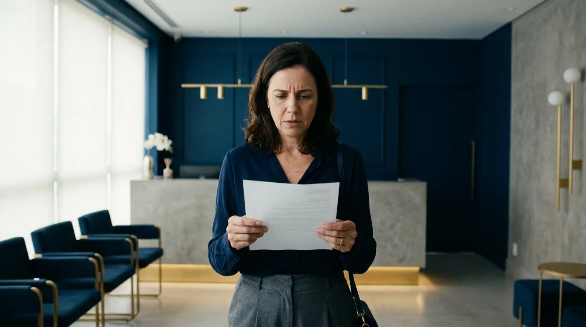
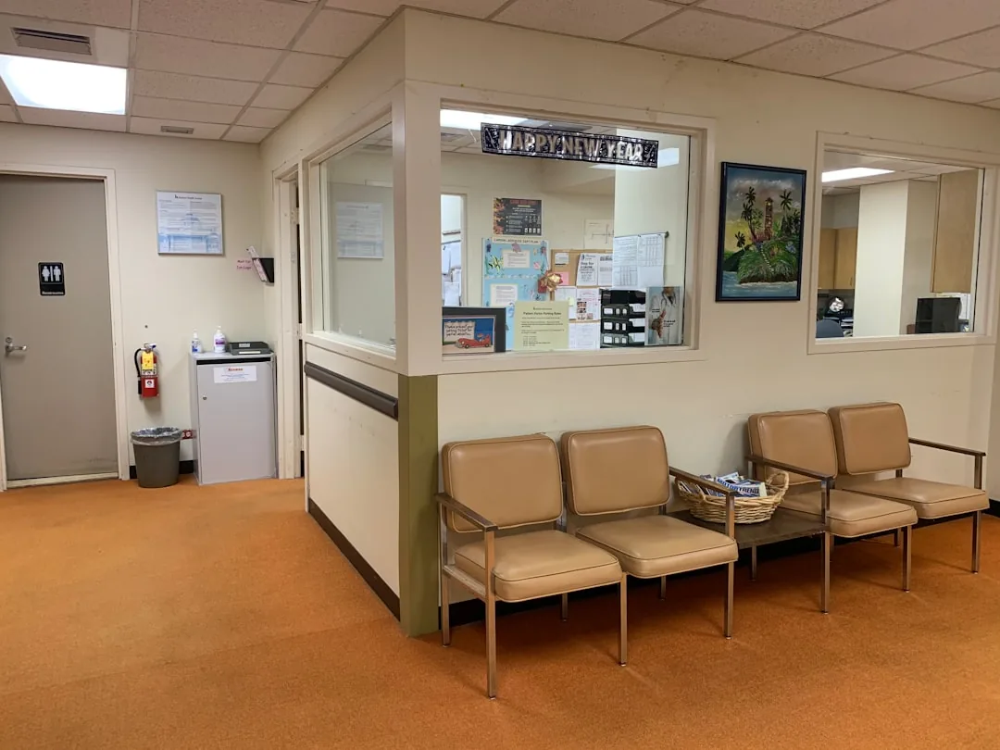

Plano de Saúde Negou Cobertura: Saiba Como Agir

Receber um não do plano de saúde na véspera de um exame, de uma cirurgia ou do início de um tratamento aflige qualquer paciente. A negativa de cobertura costuma chegar por telefone ou mensagem, sem explicação clara, e a doença não espera a burocracia.
Apesar disso, o consumidor não está desamparado. A legislação brasileira impõe limites rígidos às operadoras, e boa parte das recusas pode ser revertida pela via administrativa ou pela Justiça. Em situações de risco à saúde, existe ainda a possibilidade de uma decisão judicial rápida, a chamada liminar.
Este texto explica por que o plano de saúde nega cobertura, o que a lei diz em cada situação e como agir, da reclamação na agência reguladora até a ação judicial. O conteúdo vale para todo o Brasil, com atenção especial a quem vive em Florianópolis e na Grande Florianópolis.
As negativas de cobertura mais comuns nos planos de saúde
Antes de reagir, entenda o motivo exato da recusa, porque cada tipo de negativa de cobertura tem uma resposta jurídica própria. O primeiro passo é identificar em qual das situações abaixo o seu caso se encaixa.

Procedimento "fora do rol da ANS"
A ANS, Agência Nacional de Saúde Suplementar, é o órgão federal que regula os planos de saúde no Brasil. Ela mantém o chamado rol de procedimentos, uma lista de exames, cirurgias e terapias de cobertura obrigatória. Durante anos, as operadoras trataram essa lista como um teto: se o tratamento não estivesse ali, a resposta era não.
Esse cenário mudou. Desde a Lei 14.454/2022, o rol da ANS é considerado exemplificativo, ou seja, um ponto de partida, e não um limite absoluto. Assim, um tratamento fora da lista pode ser devido quando há comprovação de eficácia baseada em evidências científicas e plano terapêutico, ou recomendação de órgãos técnicos reconhecidos. Mesmo assim, muitas operadoras continuam usando o argumento antigo, e é justamente aí que a recusa se torna questionável.
Carência ainda não cumprida
Carência é o período de espera entre a contratação do plano de saúde e o direito de usar determinados serviços. A Lei dos Planos de Saúde fixa limites máximos: 24 horas para urgência e emergência, 300 dias para parto a termo (o parto no tempo normal da gravidez) e 180 dias para os demais casos.
Portanto, a operadora não pode inventar prazos maiores do que esses. Também não pode aplicar carência a quem fez corretamente a portabilidade (a troca de um plano por outro levando junto as carências já cumpridas) ou já cumpriu o período no contrato anterior, nas hipóteses previstas pelas normas da agência. Se o prazo legal já passou, a negativa baseada em carência é indevida.
Urgência e emergência
Emergência é a situação com risco imediato de vida ou de lesão irreparável, declarada pelo médico que atende o paciente. Urgência envolve acidentes pessoais ou complicações no processo gestacional. Nos dois casos, a carência máxima é de 24 horas contadas da assinatura do contrato.
Na prática, porém, algumas operadoras tentam limitar o atendimento de urgência a poucas horas ou recusam a internação que se segue ao pronto atendimento. A Justiça costuma considerar abusivas essas limitações quando há risco à saúde do paciente. Diante de uma recusa desse tipo, guarde todos os registros do atendimento.
Home care negado
Home care é a internação domiciliar: o paciente recebe em casa os cuidados que teria no hospital, como enfermagem, fisioterapia e equipamentos. O plano de saúde costuma negar o serviço alegando que ele não consta do contrato ou do rol.
No entanto, quando o médico indica o home care em substituição à internação hospitalar, a recusa tende a ser vista como abusiva pelos tribunais. Afinal, negar a modalidade mais adequada de tratamento esvazia a própria finalidade do contrato. Para discutir esse tipo de negativa, o documento decisivo é o relatório médico detalhado.
Medicamento de alto custo
Quimioterapia oral, imunobiológicos e outras drogas modernas custam caro, e as recusas nessa área são frequentes. Os argumentos variam: o medicamento seria experimental, estaria fora do rol ou teria uso off label, isto é, para finalidade diferente da prevista na bula.
Contudo, quando o remédio tem registro na Anvisa, a Agência Nacional de Vigilância Sanitária, e prescrição médica fundamentada, a negativa perde força. A escolha do tratamento cabe ao médico, não ao plano de saúde. Esse entendimento vem sendo aplicado com frequência pelos tribunais brasileiros.
A tabela abaixo resume os cenários mais comuns e o primeiro passo em cada um deles.
| Tipo de negativa | O que a operadora alega | Primeiro passo do consumidor |
|---|---|---|
| Fora do rol da ANS | Procedimento não está na lista obrigatória | Reunir relatório médico e evidências de eficácia do tratamento |
| Carência | Período de espera não cumprido | Conferir os prazos legais e a data de assinatura do contrato |
| Urgência e emergência | Carência ou limite de horas de atendimento | Exigir a declaração médica de urgência e registrar tudo |
| Home care | Serviço não previsto em contrato | Obter relatório indicando internação domiciliar em vez da hospitalar |
| Medicamento de alto custo | Droga experimental ou fora do rol | Verificar o registro na Anvisa e pedir prescrição fundamentada |
Atenção: nunca aceite uma negativa verbal. O plano de saúde tem o dever de entregar a recusa por escrito, com a justificativa e a indicação da cláusula ou norma aplicada. Esse documento é a base de qualquer reclamação ou ação judicial.
O que a lei diz quando o plano de saúde recusa cobertura
Três diplomas legais protegem o consumidor na relação com o plano de saúde. Conhecê-las ajuda a entender por que tantas negativas caem quando são questionadas.
O primeiro é a Lei 9.656/1998, conhecida como Lei dos Planos de Saúde. Ela define as coberturas mínimas obrigatórias, os limites de carência e as regras de urgência e emergência. Além disso, proíbe a exclusão de doenças como câncer e transtornos mentais da cobertura contratada.
O segundo é o CDC, o Código de Defesa do Consumidor. Os tribunais entendem que o contrato de plano de saúde é uma relação de consumo, salvo os planos de autogestão, como decidiu o STJ (Súmula 608). Isso significa que cláusulas abusivas podem ser anuladas e que as dúvidas de interpretação se resolvem a favor do consumidor. Quem quiser se aprofundar pode conferir o guia sobre direitos básicos do consumidor que preparamos.
O terceiro é a Lei 14.454/2022, que redefiniu, no plano legal, a natureza do rol da ANS, como vimos na seção anterior. O que vale aprofundar aqui é o critério alternativo que ela criou: mesmo sem estudo científico com plano terapêutico, basta a recomendação do tratamento por órgãos técnicos reconhecidos de avaliação de tecnologias em saúde. Na prática, a recusa automática, aquela que aponta a ausência na lista sem examinar o caso concreto, ficou muito mais frágil.
Somadas, essas normas apontam para uma mesma direção: a saúde do paciente vem antes do interesse econômico da operadora. Na prática, isso significa que a negativa precisa ter fundamento técnico e legal sólido, e não apenas uma referência genérica ao contrato.
Se você recebeu uma recusa e ficou em dúvida sobre o fundamento apresentado, uma análise jurídica do documento costuma esclarecer rapidamente se há espaço para contestação. A Mussi Advocacia & Consultoria, em Florianópolis, avalia negativas de cobertura e orienta sobre o caminho mais adequado para cada situação. Basta entrar em contato pelo site do escritório para relatar o seu caso.
Caminhos administrativos: como reclamar antes de ir à Justiça
Nem toda negativa exige processo judicial. Em muitos casos, a via administrativa resolve em poucos dias e sem custo. Por isso, vale conhecer as três frentes disponíveis antes de decidir entrar na Justiça.
O ponto de partida é sempre o mesmo: exigir a negativa por escrito. Peça o documento com a justificativa da recusa e anote o número de protocolo de todas as ligações e mensagens. Sem esse registro, a operadora pode simplesmente negar que a recusa existiu.
Em seguida, registre reclamação na ANS. O instrumento se chama NIP, Notificação de Intermediação Preliminar. Funciona assim: a agência notifica a operadora, que precisa responder à demanda em prazo curto, sob risco de sanção. Como a resposta é monitorada pelo órgão regulador, o plano de saúde muitas vezes reverte a negativa nessa fase, em questão de dias. A reclamação é gratuita e pode ser feita pelos canais oficiais da ANS.
Outra frente é o Procon, órgão estadual ou municipal de defesa do consumidor. Ele registra a reclamação, chama a operadora para responder e pode aplicar multa administrativa. Em Florianópolis, o atendimento do Procon está disponível tanto presencialmente quanto pelos canais eletrônicos do órgão.
Dica prática: guarde tudo em uma única pasta, física ou digital. Negativa por escrito, protocolos, relatório médico, trocas de e-mail e comprovantes de pagamento das mensalidades. Essa organização acelera qualquer medida, administrativa ou judicial.
A via administrativa tem uma vantagem clara: rapidez sem custo. Mas ela não é obrigatória. Quando a situação envolve risco imediato à saúde, esperar a mediação pode não ser razoável, e aí o caminho é o judicial.
Liminar contra o plano de saúde: como funciona o caminho judicial
Quando a recusa coloca a saúde em risco, o instrumento mais eficaz é a ação judicial com pedido de liminar, tecnicamente chamada de tutela de urgência. A liminar é uma decisão provisória, dada pelo juiz logo no início do processo, antes mesmo de ouvir o plano de saúde.
Para conceder a medida, o juiz analisa dois requisitos. O primeiro é a probabilidade do direito: a documentação precisa indicar que a negativa aparenta ser indevida. O segundo é o perigo da demora: a espera pelo fim do processo causaria dano grave à saúde do paciente. Presentes os dois, a decisão pode determinar a autorização imediata do procedimento, sob pena de multa diária.
Não existe prazo fixo para a análise. Entretanto, pedidos que envolvem risco de vida costumam receber prioridade na tramitação, e a apreciação pode ocorrer em regime de plantão judiciário quando a urgência justificar.
Documentos necessários para a ação
A força do pedido depende diretamente da qualidade da prova. Por isso, reúna com antecedência os seguintes documentos:
O documento mais importante é o relatório médico. Ele deve descrever a doença, o tratamento indicado, a urgência e as consequências da falta de cobertura. Junto dele, entram a negativa por escrito, o contrato do plano de saúde, a carteirinha do beneficiário, os comprovantes de pagamento das mensalidades e os exames que embasam a prescrição.
Onde a ação tramita em Florianópolis
Na capital catarinense, as ações contra o plano de saúde tramitam na Justiça comum de Florianópolis (nas varas cíveis) ou nos Juizados Especiais Cíveis, o caminho mais simples para causas de menor valor. Moradores de cidades da Grande Florianópolis, como São José, Palhoça e Biguaçu, entram com a ação na Justiça de seus próprios municípios. O Juizado dispensa advogado em causas menores, mas a orientação técnica faz diferença na formulação do pedido de liminar e na produção da prova.
A tabela a seguir compara os dois caminhos e ajuda a decidir por onde começar.
| Critério | Caminho administrativo (NIP e Procon) | Caminho judicial (ação com liminar) |
|---|---|---|
| Custo | Gratuito | Custas processuais, com possibilidade de gratuidade de justiça |
| Velocidade | Resposta da operadora em poucos dias | Liminar pode sair rapidamente em casos urgentes |
| Força da decisão | Mediação, sem obrigação de cobertura | Ordem judicial com multa em caso de descumprimento |
| Indicado para | Casos sem risco imediato à saúde | Risco à saúde, urgências e recusas reiteradas |
| Reparação de danos | Não abrange indenização | Permite pedir danos morais e materiais |
Antes de escolher o caminho, considere conversar com um profissional que atue com direito à saúde e planos de saúde. A Mussi Advocacia & Consultoria analisa a documentação, verifica a viabilidade do pedido de liminar e conduz o processo em Florianópolis e região. O contato pode ser feito pelo site do escritório, com envio da negativa e do relatório médico para avaliação.
Quando procurar um advogado para plano de saúde em Florianópolis
Quem pesquisa por advogado especialista em plano de saúde em Florianópolis geralmente já tentou resolver sozinho e encontrou portas fechadas. Em que momento, então, a ajuda profissional se torna necessária?

Alguns sinais indicam a hora certa. O mais evidente é a urgência médica com o plano de saúde insistindo na recusa, já que o pedido de liminar exige fundamentação técnica bem construída. Outro é quando a NIP na ANS não resolveu, ou a operadora cumpriu apenas parte do que prometeu. Valores altos também pesam na decisão: cirurgias complexas, home care prolongado, medicamento de uso contínuo.
O papel do advogado para plano de saúde em Florianópolis vai além de entrar com a ação. O trabalho começa pela leitura do contrato e da negativa, passa pela orientação sobre o relatório médico e chega à escolha da estratégia: reforçar a via administrativa, ajuizar a ação com pedido de liminar ou combinar as duas frentes. Cada caso tem particularidades que mudam esse desenho.
Também é papel do profissional alinhar expectativas. Nenhum advogado sério promete resultado, porque a decisão é sempre do Poder Judiciário. O que se pode oferecer é diagnóstico honesto, transparência sobre os cenários possíveis e condução diligente do processo. Desconfie de promessas de vitória garantida, pois elas violam as normas da advocacia.
Importante: a busca de um advogado não impede a reclamação na ANS nem o registro no Procon. As frentes administrativa e judicial podem caminhar juntas, e a estratégia combinada costuma pressionar a operadora com mais eficiência.
Por fim, a proximidade conta. Um escritório da capital conhece o funcionamento do foro local e acompanha o processo de perto. A Mussi Advocacia & Consultoria, do advogado José Lucas Mussi, atende casos de negativa de cobertura em Florianópolis e na Grande Florianópolis, com análise individualizada de cada situação. Para uma avaliação do seu caso, acesse advmussi.com.br e envie a documentação da recusa.
Perguntas frequentes sobre negativa do plano de saúde
O plano de saúde pode negar atendimento de urgência alegando carência?
Depois de 24 horas da assinatura do contrato, não. A Lei 9.656/1998 fixa em 24 horas a carência máxima para urgência e emergência. Recusas que ultrapassam essa regra, ou que limitam o atendimento a poucas horas, podem ser questionadas na ANS e na Justiça.
O que é o rol da ANS e ele ainda limita a cobertura?
O rol da ANS é a lista de procedimentos de cobertura obrigatória mantida pela Agência Nacional de Saúde Suplementar. Desde a Lei 14.454/2022, a lista é exemplificativa. Tratamentos fora do rol devem ser cobertos quando há comprovação de eficácia baseada em evidências científicas ou recomendação de órgãos técnicos.
Reclamar na ANS resolve ou preciso ir direto à Justiça?
Depende da urgência. A NIP, Notificação de Intermediação Preliminar, resolve muitos casos em poucos dias, porque a operadora responde sob supervisão da agência. Quando existe risco imediato à saúde, porém, a ação judicial com pedido de liminar tende a ser o caminho mais rápido e seguro.
Quais documentos preciso reunir antes de procurar um advogado?
Relatório médico detalhado, negativa por escrito com justificativa, contrato do plano de saúde, carteirinha do beneficiário, comprovantes de pagamento das mensalidades e exames que embasam a prescrição. Protocolos de ligações e mensagens com a operadora também fortalecem o caso.
A operadora pode cancelar meu contrato porque entrei na Justiça?
Não. O cancelamento como retaliação a uma reclamação ou ação judicial é considerado prática abusiva à luz do Código de Defesa do Consumidor. Além disso, a Lei 9.656/1998 só permite que a operadora rescinda o contrato individual em caso de fraude ou de falta de pagamento prolongada, e sempre com notificação prévia do consumidor.
Quanto custa contratar um advogado para caso de plano de saúde em Florianópolis?
Os honorários variam conforme a complexidade do caso e são combinados de forma transparente antes da contratação. Na Justiça comum, quem não pode pagar as custas do processo pode pedir a gratuidade de justiça. A avaliação inicial da documentação esclarece os cenários antes de qualquer compromisso.
A negativa não é a palavra final
Uma negativa de cobertura raramente encerra a discussão. Com a documentação organizada, os caminhos administrativos bem usados e, quando necessário, o pedido de liminar, o consumidor tem meios reais de fazer valer o contrato que paga todos os meses. Se o seu plano de saúde negou um exame, uma cirurgia, um medicamento ou o home care, a Mussi Advocacia & Consultoria pode analisar o seu caso em Florianópolis. Acesse advmussi.com.br, relate a situação e receba uma orientação clara sobre os próximos passos.